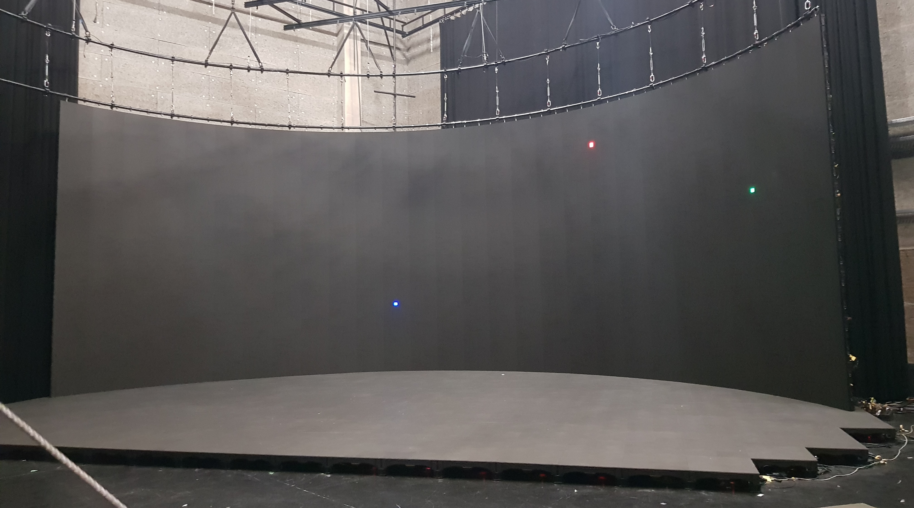
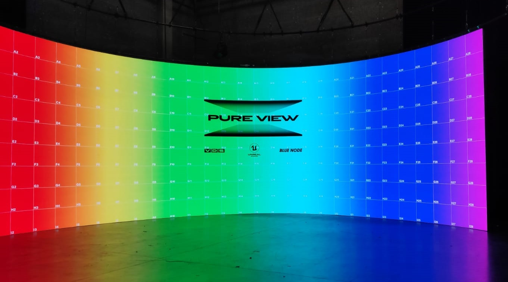
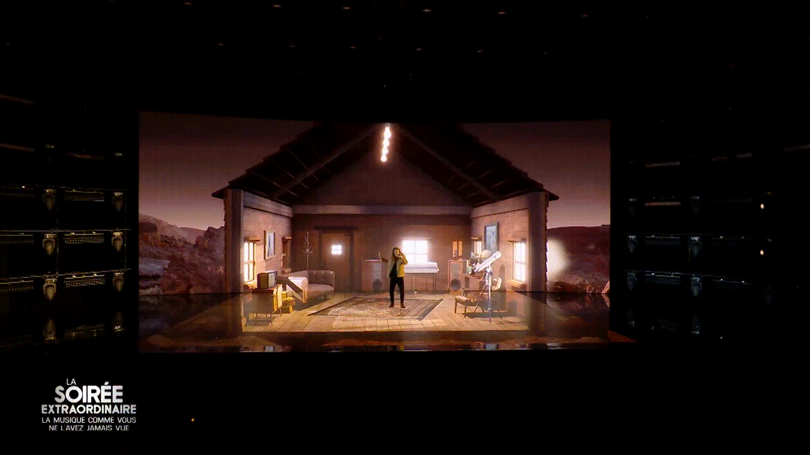

Author: Nelson Defoulny
Category: Professional Projects
Date: 2020-2023
Company: Blue Node
Job: Technical Director
Contract: Permanent
Development Team Size: 3
Virtual Production



Introduction
As the technical director of Blue Node, I led a small developer team. Over the years, we implemented many tools to advance our Virtual Production setups.
Virtual Production has many different meanings depending on the industry and context. The most general definition is any production that leverages real-time technology to replace classic offline rendering, providing new options. At Blue Node, each production had its own workflow and tools depending on the needs. Therefore, I had the opportunity to work with a wide range of technologies and devices.
Productions
Here is a short list of some production I worked on.
TV
Hondelatte Raconte Series 1 & 2 Canal+
La soirée extraordinaire M6
Advertising
Louis Vuitton EyeWear SS22
Coperni SS21 Campaign
Events
FIFA club world cup closing ceremony AR content
Ubisoft XR Live Conference
Music
Soprano XR Livestream
Owlle XR Music Video
Eddy De Pretto Désolé Caroline
Virtual Production Core Concepts
Explaining virtual production in depth would require a dedicated book, so I will just provide an overview.
The main idea behind these productions is to get the physical camera location in real time (Tracking). Using this information, we can compute the 3D camera frustum and render a virtual scene. This gives us an image with the correct perspective from the camera's viewpoint. Depending on the context, we can use the created image to enhance the physical camera's captured image.
In the case of Augmented Reality (AR), the rendered image is simply blended in front of the captured image. This is used to add virtual objects in front of actors.
In the case of In-Camera VFX (ICVFX), the goal is to send this image to a physical LED wall behind the actors. This creates the same effect as a traditional green screen, but the result is visible immediately instead of waiting for post-production. The second advantage is that the lighting matches the 3D environment, which is especially useful for creating ambiance or handling reflective objects. On top of camera tracking, this technique also requires a 3D mesh that matches the physical LED screen in order to re-project the rendered image.
One of the problems with ICVFX is that large shots are not really feasible because the camera will capture the surrounding studio, which we don't want to see. The ideal solution is to use a bigger LED wall, but this is very expensive. The second solution is to create an "extend" (XR). The idea is to render the same scene and perspective as the LED wall image and use this as an AR mask to cover part of the image that is outside of the LED screen.
All of the productions above leverage camera tracking and Unreal Engine real-time rendering. But the actual setup might include one or multiple concepts (ICVFX / AR / XR).
What it looks like in practice
A virtual production setup usually includes the following elements:
- One or multiple cameras.
- One tracking system per tracked camera.
- A genlock to synchronize devices. It is a pulse indicating the beginning or end of each frame.
- A timecode to get a consistent time source across multiple devices. It can also be used to control some playback or trigger events.
- ICVFX: a LED screen and its processors.
- ICVFX: a cluster of synchronized rendering servers (LEDs have too many pixels for one machine). The underlying technology is called nDisplay and is developed by Epic Games.
- AR: one rendering server per video feed (usually one per camera).
- An operator computer that serves as a hub to control servers.
- A graphic designer's dedicated computer.
- A bunch of networks using a variety of protocols to transfer data across devices (UDP, TCP, DMX, OSC, etc.).
This list is just an overview of important devices for the 3D-related tasks. There are many other devices to control other aspects of the production (lights, recording, audio, set, etc.).
Personal Contribution
I want to present a short list of the tools my team and I developed. A big part of the job was linked to the specifications of each production, and we produced a lot of one-off code that is not worth mentioning in detail.
Checks
One of the principal difficulties in Virtual Production is that it is a long chain of devices and software, and the only feedback is the final image. Identifying the source of a problem or even noticing an existing problem is not trivial. With my team, we developed multiple tools (bash, python, unreal, etc) to help us with diagnosis.
Source Control
In order to sync rendering servers, we extended Epic Games' Switchboard to support Plastic SCM. We also added real-time diagnosis of machine performance and potential divergence with other servers.
Operator Control
This is the main Unreal Engine tool we developed. It is more a suite of tools designed to set up and operate the system. Overall features include:
- Create/Load per machine configuration.
- Load/Save/Sync Unreal Engine maps.
- Control and diagnose machine performance in real time.
- Centralize messages and error logs from all machines.
- Trigger events and sequences.
- Complex compositing setup for ICVFX inner and outer frustum.
- Handle network communication with third-party devices using OSC, UDP, and DMX protocols.
LED Wall Creator
This tool was made to create LED meshes for ICVFX setups. This was motivated by the difficulty we faced in creating these meshes. In order to have valid projection, we need a very accurate mesh, and all other techniques we tried (measurement, lasers, lidar, etc) failed to provide a quick, accurate, and repeatable creation process.
In the first version of the tool, the mesh was built vertically on top of the spline. Spline points were projected in a pixel-accurate way onto the LED floor. Therefore, moving spline points was reflected in real time on the physical floor, which allowed us to create the curved LED wall.
For this tool I developed:
- 3D to 2D location conversion
- Dynamic mesh creation, UV editing, and static mesh baking from Unreal Engine Editor
- Automatic reload of nDisplay mesh at runtime (in servers)
- Edit propagation through Unreal Engine Multi-User tool
I also worked on a second version that did not require an LED floor. The idea was to match 2D and 3D grids in the LED wall with the same grid in AR. Overlapping both grids in the final display allowed us to edit the mesh iteratively until both grids matched. The tool development was eventually canceled, but I had made significant progress, so it is worth mentioning.
Technical Mire
I developed a technical mire for LED screens. This tool had multiple motivations, but the main idea was to validate LED screen setup. Among other things, it helped a lot to validate LED screen layout and color as well as nDisplay LED mapping. It often happened that some tiles of the LED were inverted either in the LED processor mapping or physically. The same goes for colorimetry, which might be off for multiple reasons. Especially, it makes it visually obvious if the LED is displaying 8-bit rather than 10-bit colors. In terms of development, it is just a shader, but getting pixel-accurate precision wasn't that simple due to the complexity of the post process chain in Unreal Engine.
Scene Snapshot
This tool was built on top of multiple Unreal plugins and was developed to save and organize scene snapshots and replay them on demand. Handling multiple scene versions in Unreal Engine can be quite challenging, especially because of the fast-paced production we were working on. Duplicating a map and using source control was definitely not an option as it would have taken too much time and forced the rendering cluster to reboot. Therefore, we built the tool on top of Epic Games' Level Snapshot tool. We developed a complex filtering setup tied to a sublevel system that holds graphical content, leaving the persistent level free to contain technical elements. We also developed multiple snapshot reloading methods (code, sequence, custom UI). The most complex part was making sure that snapshots reloads properly on the nDisplay Cluster, as the Level Snapshot is an Editor tool running on the operator machine while the servers are in runtime mode.
Multi Unreal Per Server
For Hondelatte Raconte season 2, we wanted to swap scenes in real time to create a theater effect. Normally in ICVFX production, we use the first GPU to render the camera frustum and the second GPU to render a 360 image of the scene for the outer frustum, which serves as ambient light. This is done using one Unreal Engine instance per machine, leveraging nDisplay multi-GPU support.
For this production, we decided to use pre-rendered images for the outer frustum, which freed a GPU. I extended the Unreal Engine TextureShare plugin to support texture transfer between two Unreal instances running on the same machine. This allowed me to set up two Unreal instances per server, one on each GPU, each rendering its own scene. I then leveraged texture sharing across GPUs to composite the final image on the first GPU (the one with the display port output).
Modifying TextureShare was not trivial, but the real complexity did not come from this part of the plan. The main problem was adding control for loading not one but two scenes per machine and dispatching them properly to both instances. None of Unreal Engine's plugins dedicated to virtual production support such a setup. Therefore, we had to extend the operator control tool, compositing setup, outer frustum images, multi-user behavior, error management, and basically all of the existing tools we were using.
This was a big challenge, but during production it worked well and even exceeded expectations by reducing the amount of time lost between scenes thanks to being able to preload scenes in advance.
Graphics Designers Support
Another important part of my job was supporting graphics designers. I developed multiple small tools related to content creation, such as spline placement tools, conveyor systems, some rendering-related scripts, and of course some turnkey solutions to integrate their work in the context of virtual production.